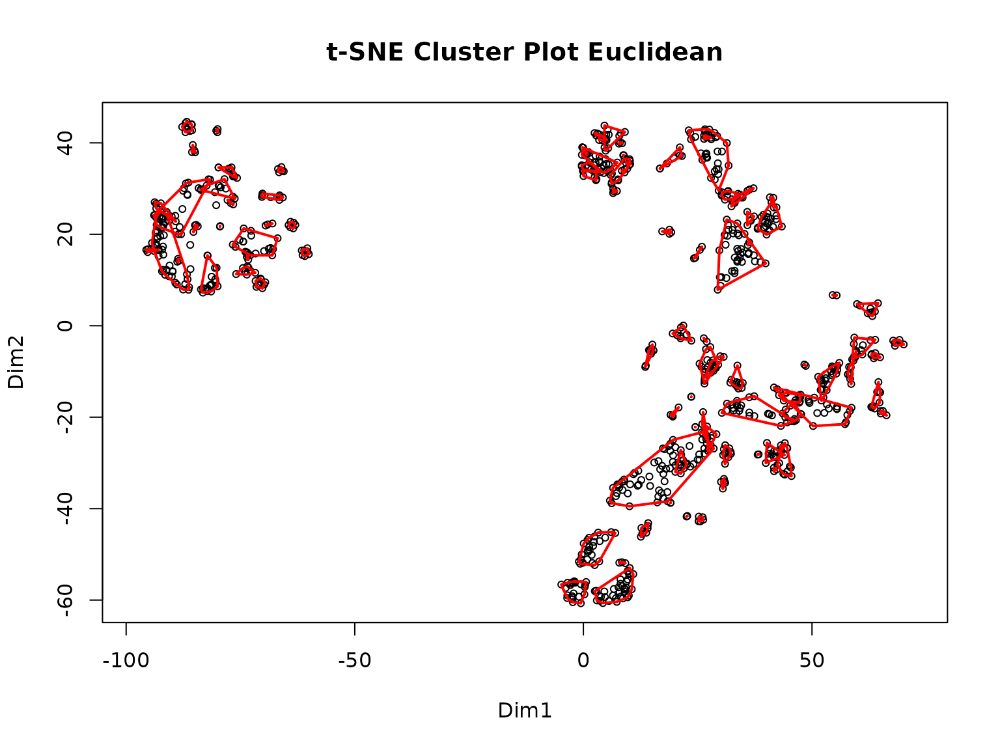
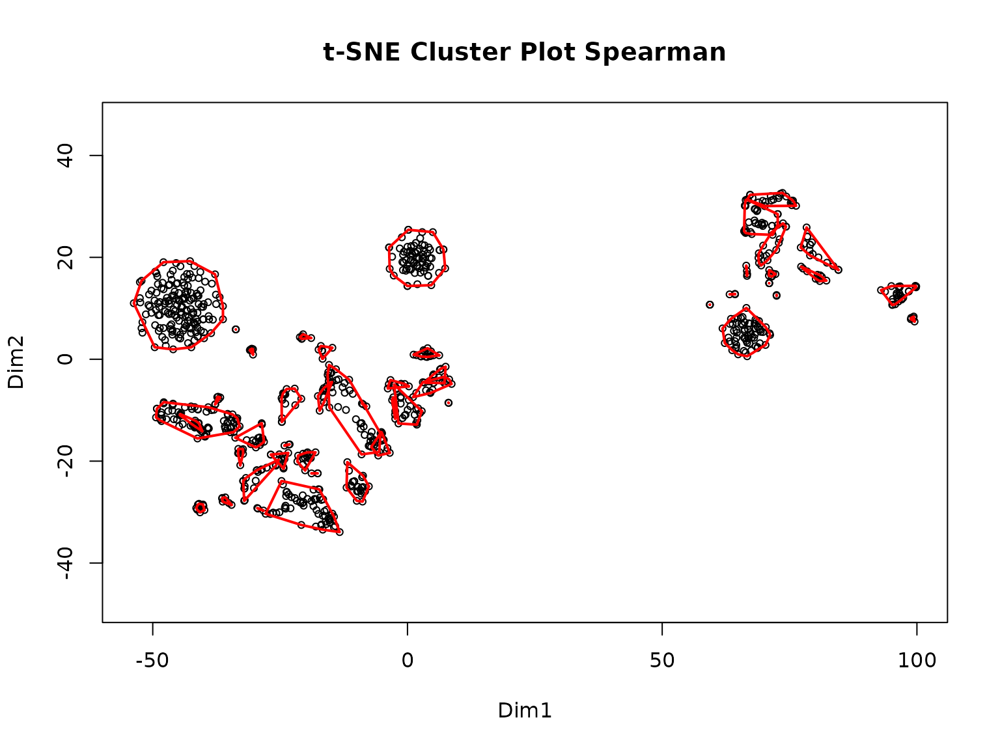

Using the P2P Package: A Step-by-Step Tutorial
Nagashree Avabhrath, Mikhail Ukrainetz, Madison Moffett, Grant Smith, Lucia Williams, Mark Grimes
PTMsToPathways.RmdThis tutorial is intended to be a step-by-step guide to walk users through the process of using the P2P package. It includes descriptions of each function and must be run in order as subsequent steps require the data produced in previous steps. Example code and example outputs as well as estimated run-times are included with each description and are based on a preliminary dataset of ~9000 PTMs and 69 experimental conditions processed with a 12th Gen i7 processor and 16GB of RAM.
An important note: The returned outputs from the functions are data that may be saved in an RData object so that the user may reload the data, which may take a while to generate, and pick up where they left off later. See the bottom of this document for code to save your data efficiently.
Installing the Package
You will need to install the devtools package, which can be installed with:
install.packages("devtools")Next, install the package with:
devtools::install_github("UM-Applied-Algorithms-Lab/PTMsToPathways")And load the package:
Starting Data
For the tutorial, we will be using two example datasets: a smaller dataset consisting of 933 PTMs and 18 experimental conditions (the example used in the Raw Data Processing vignette) and a larger dataset containing around 9000 PTMs and 69 experimental conditions. These datasets are available with the package. Alternatively, the larger dataset can be downloaded here to be inspected locally.
To see all data that is provided with the package, run:
data(package = "PTMsToPathways")| Dataset Name | Description |
|---|---|
| ex.CPE.matrix (CPE_matrix) | CPE matrix example |
| ex.Jaccard.Full (Jaccard_Full) | Jaccard Example |
| ex.PTPedgelist (PTPedgelist) | PTP Edgelist Example |
| ex.all.tsne.coords (all_tsne_coords) | All Tsne Coords |
| ex.bioplanet (bioplanet) | Bioplanet Example |
| ex.cfn (cfn) | Cluster Filtered Network Example |
| ex.clusters.list (clusters_list) | Clusters List Example |
| ex.common.clusters (common_clusters) | List of Common Clusters Example |
| ex.funckey (funckey) | Funckey |
| ex.gene.cccn (gene_cccn) | Gene CoCluster Network example |
| ex.gm.edges (gm_edges) | Full GeneMANIA Edges Example |
| ex.gm.network (gm_network) | Full GeneMANIA Network Example |
| ex.gm.nodes (gm_nodes) | GeneMANIA Nodes Example |
| ex.nodenames (nodenames) | Nodenames Example |
| ex.pathways.list (pathways_list) | Pathways List Example |
| ex.ppi.network (ppi_network) | PPI Network Example |
| ex.ptm.cccn (ptm_cccn) | Filtered Correlation Matrix example |
| ex.ptm.correlation.matrix (ptm_correlation_matrix) | Correlation Matrix Example |
| ex.stringdb.edges (stringdb_edges) | STRINGdb Edges example |
| ex_adj_consensus | Adj Consensus |
| ex_full_ptm_table | Full PTM Table Example |
| ex_small_ptm_table | Small PTM Table Example |
| ex_tiny_ptm_table |
If you are using the smaller dataset, use the following code to view the dimensions of the dataset and a small portion of it:
dim(ex_small_ptm_table)
ex_small_ptm_table[38:50, 1:2]
>> [1] 908 18
>> H3122SEPTM_pTyr.C1 H3122SEPTM_pTyr.C2
>> HNRNPA3 p S358 NA NA
>> EPHB4 p S575 NA NA
>> BCAR1 p S407 163730 159600
>> MAGOH p S38; MAGOHB p S40 1824100 NA
>> DYNLL1 p S64; DYNLL2 p S64 NA NA
>> PRKCD p S304 NA NA
>> PCDH1 p S1018 NA 563220
>> AHNAK p S5832 NA NA
>> AHNAK p S5841 NA NA
>> ARHGEF5 p S1139 NA NA
>> SRSF9 p S178 NA NA
>> RIPK1 p S389 NA NA
>> URB2 p S18 NA NAIf you want to use the bigger dataset, the following code shows the dimensions and a snippet of the dataset:
dim(ex_full_ptm_table)
ex_full_ptm_table[38:50, 1:2]
>> [1] 9215 69
>> H3122SEPTM.C1 H3122SEPTM.C2
>> ABCC4 ubi K540 20.03456 NA
>> ABCC4 ubi K622 NA NA
>> ABCC4 ubi K695 NA NA
>> ABCC4 ubi K77 NA NA
>> ABCC5 p Y10 NA NA
>> ABCD1 ubi K407; ABCD2 ubi K411 NA NA
>> ABCD3 ack K260 NA NA
>> ABCD3 ubi K260 NA NA
>> ABCD3 ubi K576 NA NA
>> ABCE1 ubi K121 17.62671 17.65533
>> ABCE1 ubi K210 NA NA
>> ABCE1 ubi K250 NA NA
>> ABCE1 ubi K93 NA NAIf you have downloaded the larger dataset locally, you can read it into R using the following code:
allptmtable <- read.table("AlldataPTMs.txt", sep = "\t", skip = 0, header = TRUE,
blank.lines.skip = T, fill = T, quote = "\"", dec = ".",
comment.char = "", stringsAsFactors = F)Using Your Own Data
To use your own MS data, you will need to transform it into a dataframe with PTMs and row names, experimental conditions as column names, and numeric data as the entries. Please refer to the Raw Data Processing vignette for a tutorial showing all steps needed to transform an MS output file into a P2P package input dataframe.
Step 1: Make Cluster List
MakeClusterList is the first step in the P2P process.
This function takes the dataframe ptmtable and runs it
through three calculations of statistical measures of distance:
Euclidean Distance, Spearman Dissimilarity (1- |Spearman Correlation|),
and SED (the average of both Spearman Dissimilarity (1- Spearman
Correlation) and Euclidean Distance). Combining the two dissimilarities
leads to better resolution of the data and is useful in pattern
recognition. A correlation table— ptm.correlation.matrix—is
generated based on the distances calculated for each pair of PTMs. The
function then runs the matrices through t-SNE to generate clusters based
on the previously calculated distance and provides you with a cluster
list, common.clusters. The returned
adj.consensus.matrix (which identifies which PTMs cluster
together with a ‘short distance’ between them) and
ptm.correlation.matrix are also used in the next step to
create co-cluster correlation networks (CCCNs). These three outputs are
returned as a list.
The keeplength paramter defines the minimum number of
PTMs that must be in a cluster for it to be retained in the final
output. The toolong parameter defines the maximum distance
between two PTMs for them to be considered as clustering together.
MakeClusterList can be run like so:
set.seed(88)
clusterlist.data <- MakeClusterList(ex_small_ptm_table, keeplength = 2, toolong = 3.5)
>> Starting correlation calculations and t-SNE.
>> This may take a few minutes or hours for large data sets.
>> Spearman correlation calculation complete after 13.23 secs total.
>> Spearman t-SNE calculation complete after 42.27 secs total.
>> Euclidean distance calculation complete after 42.31 secs total.
>> Euclidean t-SNE calculation complete after 1.15 mins total.
>> Combined distance calculation complete after 1.15 mins total.
>> SED t-SNE calculation complete after 1.61 mins total.
>> Clustering for Euclidean complete after 1.62 mins total.
>> Clustering for Spearman complete after 1.63 mins total.
>> Clustering for SED complete after 1.63 mins total.
>> Consensus clustering complete after 1.64 mins total.
>> MakeClusterList complete after 1.64 mins total.The following unpacks the output into the separate objects discussed above:
common.clusters <- clusterlist.data[[1]]
adj.consensus.matrix <- clusterlist.data[[2]]
ptm.correlation.matrix <- clusterlist.data[[3]]Now we can view the objects. First, here is an example of a cluster:
common.clusters[1]
>> $ConsensusCluster1
>> [1] "KRT7 p S37"
>> [2] "CALM3 p Y100; CALM2 p Y100; CALM1 p Y100"
>> [3] "ERP29 p Y66"
>> [4] "MYH9 p Y1408"
>> [5] "PTK2 p Y925"
>> [6] "TNK2 p Y827"
>> [7] "ITSN2 p Y553"
>> [8] "PRRC2C p Y1218"Next, we look at a piece of the adjacency matrix. Ones represent a pair that cluster and zeroes represent a pair that doesn’t:
adj.consensus.matrix[7:10, 7:10]
>> CTNND1 p S225 CTNND1 p S230 STAM2 p S375 EGFR p S1166
>> CTNND1 p S225 0 0 0 0
>> CTNND1 p S230 0 0 0 0
>> STAM2 p S375 0 0 0 0
>> EGFR p S1166 0 0 0 0Here is a part of the PTM correlation matrix. Values for pairs of PTMs are Spearman correlation coefficients ranging from -1 to 1. If two PTMs had no experimental conditions in common, their correlation value will be NA.
Step 2: Make Co-Cluster Correlation Networks (PTM and Gene)
The data generated in the previous step is next used to create a new network of PTMs that have strong associations called the Co-cluster Correlation Network (CCCN). The Spearman correlations between co-clustered PTMs are used as edge-weights in this network. The MakeCorrelationNetwork function groups the PTM correlation matrices by PTMs that co-cluster together to create a PTM CCCN. It then defines a relationship between proteins modified by PTMs and creates a gene CCCN with sum of the PTM correlations serving as edge weights.
CCCN.data <- MakeCorrelationNetwork(adj.consensus.matrix, ptm.correlation.matrix)
>> Making PTM CCCN
>> PTM CCCN complete after 0.16 secs total.
>> Making Gene CCCN
>> Gene CCCN complete after 1.9 secs total.
ptm.cccn.edges <- CCCN.data[[1]]
gene.cccn.edges <- CCCN.data[[2]]
gene.cccn.nodes <- CCCN.data[[3]]We can view a portion of the PTM CCCN edges:
ptm.cccn.edges[18:22,]
>> source target Weight interaction
>> 18 EIF2B1 p S131 PKP4 p S273 -0.6833333 negative correlation
>> 19 LDHB p S238 EML4 p S242 -1.0000000 negative correlation
>> 20 S100A16 p S27 EML4 p S242 -0.5000000 negative correlation
>> 21 PXN p S90 S100A14 p S33 -0.3571429 correlation
>> 22 URB2 p S18 SHANK2 p S589 0.5428571 positive correlationAnd a portion of the gene CCCN edges:
gene.cccn.edges[1:5,]
>> source target Weight interaction
>> 1 ADGRL2 ALDOA -0.4535714 correlation
>> 2 ACP1 ALK 0.6000000 positive correlation
>> 3 AHNAK ANO1 1.5428571 positive correlation
>> 4 ACP1 ANXA2 -0.2571429 correlation
>> 5 ADAM10 ANXA2 0.1702786 correlationFinally, we can view a portion of the gene CCCN nodes, which are used to map to external PPI databases in the next step:
Because this step can take a long time to run on larger datasets, the output may be saved as an RData object for later use.
save.image(file = "filepath/name.RData") # All objects in the environment are savedStep 3: Retrieve Database Edgefiles
The third step of the P2P package is to gather data from multiple existing protein-protein interaction (PPI) databases which will be integrated with the data generated in steps 1 and 2. The P2P package explicitly allows the users to integrate data from three external databases: STRING, GeneMANIA, and PhosphoSite Plus. Other databases can also be downloaded and added to the PPI network. All three external databases have different interfaces for downloading data, so we show how to retrieve data from each of them below.
1. STRINGdb
STRINGdb can be queried directly
from R using the STRINGdb package. We wrap this query in a
function called GetSTRINGdb, which queries only for the
genes found in clusters in previous steps, and filters the returned by
interaction type so only experimental,
database, experimental_transferred, and
database_transferred are retained. This ensures that only
interactions with more substantial evidence are used in this
analysis.
stringdb.edges <- GetSTRINGdb(gene.cccn.edges, gene.cccn.nodes)
stringdb.edges[1:5,]
>> Warning: we couldn't map to STRING 0% of your identifiers source target interaction Weight
>> 21 MAPK13 MAPK12 database 1128
>> 31 MAPK12 MAPK1 database 1182
>> 35 GPRC5A MYH9 experimental 164
>> 41 MISP MYH9 experimental 148
>> 71 MYH9 PIK3R2 experimental_transferred 2162. GeneMANIA
To our knowledge, no R package exists to programmatically query GeneMANIA. Thus, we recommend using the GeneMANIA Cytoscape App to retrieve PPI data as follows.
First, create an input file for GeneMANIA using the
MakeDBInput function provided within P2P (note that this
creates a text file in your working directory):
MakeDBInput(gene.cccn.nodes, file.path.name = "db_nodes.txt")Next, ensure that you have Cystoscape and the GeneMANIA extension installed.
Copy the contents of the db_nodes.txt file into the
GeneMANIA App’s “Genes of Interest” box and run query.
To save the results, click on the three lines in the upper right corner. This should be under the GeneMANIA side window beside the species. Click “Export Results”. The path to this file is the gm.results.path:


The GetGeneMANIA.edges function then processes the
output file produced by GeneMANIA itself. For example, we have saved
ex_gm_results.txt as an example output file from GeneMANIA
within the package. The following code shows how to use this file as
input to the function.
gm.results.path <- system.file("extdata", "ex_gm_results.txt", package = "PTMsToPathways")
genemania.edges <- GetGeneMANIA.edges(gm.results.path, gene.cccn.nodes)We can see an example of the GeneMANIA edges below:
3. Phosphosite Plus
The kinase-substrate data can be downloaded from Phosphosite Plus
database. The users will be required to create an account and sign in to
download the data. The formatKinsubTable function reads
this downloaded data in and formats it so that all the PPI edge data
frames are in the same format for the next step.
input.filename <- system.file("extdata", "Kinase_Substrate_Dataset.txt", package = "PTMsToPathways")
kinsub.edges <- formatKinsubTable(input.filename,
gene.cccn.nodes)Step 4: Build PPI Network and Cluster Filtered Network
The BuildClusterFilteredNetwork function allows the
users to filter protein-protein interaction networks using the
previously generated co-cluster correlation networks. PPIs are retained
in the cluster filtered network (CFN) only if the interacting proteins
share statistically correlated PTMs identified via t-SNE clusters. The
BuildClusterFilteredNetwork function combines all the PPI
data downloaded in step 3 as efficiently as possible while retaining the
desired edge weights. It then normalizes the weights on a scale of 0-1
and gives an output cluster filter network that will only retain
interacting proteins whose genes are within the co-cluster correlation
network created in step 2.
We first run the function:
network.list <- BuildClusterFilteredNetwork(gene.cccn.edges, stringdb.edges,
genemania.edges, kinsub.edges = NULL,
db.filepaths = c())And then unpack the outputs into separate variables:
combined.PPIs <- network.list[[1]]
cfn <- network.list[[2]]To reduce clutter on graphs, the CFN edges can be merged:
cfn.merged <- mergeEdges(cfn)Step 5: Pathway Crosstalk Network
The final step is the creation of the Pathway Crosstalk Network
(PCN). This step requires input of an external database from NCATS
BioPlanet that contains groups of genes (proteins) involved in
various cellular processes known as pathways.
BuildPathwayCrosstalkNetwork turns this data file into a
list of pathways and converts those pathways into a list of
pathway-pathway edges, each of which is assigned a Jaccard similarity
and a Cluster-Pathway Evidence score based on the common clusters found
in the gene co-cluster correlation network. Info about the
Cluster-Pathway Evidence score can be found here
For graphing in Cytoscape, the Cluster-Pathway Evidence and Jaccard
similarity edges are listed separately in the edgelist called
pathway.crosstalk.network.
bioplanet.file <- system.file("extdata", "pathway.csv", package = "PTMsToPathways")PCN.data <- PathwayCrosstalkNetwork(common.clusters, bioplanet.file,
createfile = FALSE)
pathway.crosstalk.network <- PCN.data[[1]]
PCNedgelist <- PCN.data[[2]]
pathways.list <- PCN.data[[3]]
>> [1] "Making PCN"
>> [1] "2025-12-02 18:40:52 UTC"
>> [1] "2025-12-02 18:40:52 UTC"
>> [1] Total time: 0.109464168548584Saving Data
If you want to save your data to a file, all data structures can either be exported with the save function and loaded later or saved to a csv file with the write.csv function.
To save one object:
save(object, filename = "filepath/name.rda") # Saves object as an .rda
load("filepath/name.rda") # Loads object saved to a fileFor multiple objects: Note the objects are saved as an .RData rather than an .rda
save(object1, object2, object.ect, filename="NewFile.RData")To save one object as a csv:
utils::write.csv(object, file = "filepath/name.csv") # Saves object as a .csv
utils::read.csv(file = "filepath/name.csv") # Loads object from .csvYou may also save your entire Global Environment namespace using the save.image function as shown below:
save.image(file = "filepath/name.RData") # All objects in the environment are saved